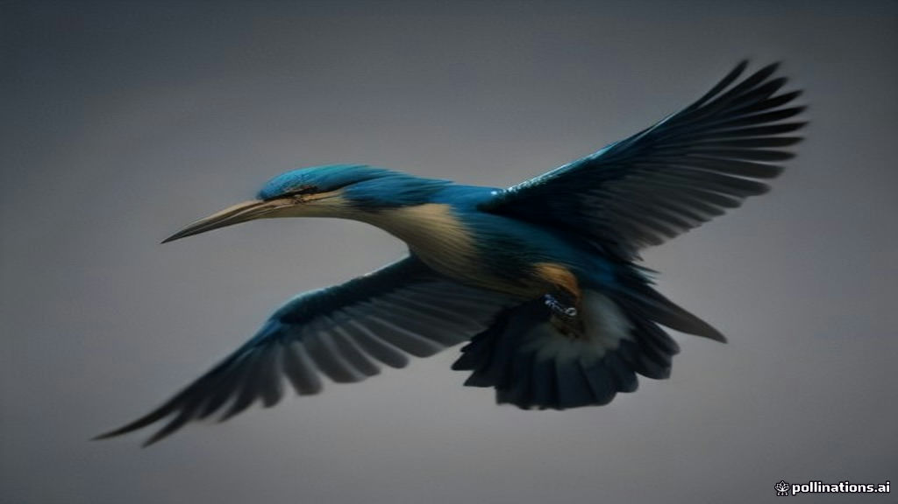

The year is 2005. The air is thick with anticipation, the hum of powerful engines, and the clinking of champagne glasses. Vijay Mallya, India's self-proclaimed 'King of Good Times,' stands before a gleaming Airbus A320, its tail emblazoned with the iconic Kingfisher bird. This isn't just a plane; it's a "flying five-star hotel," as Mallya himself described it, launched on May 9, 2005, reportedly timed with his son Sidhartha's 18th birthday. With leather seats, personal in-flight entertainment, and gourmet meals served on Villeroy & Boch crockery even in economy class, Kingfisher Airlines promised a revolution in Indian air travel. Mallya, leveraging the powerful brand image of his Kingfisher beer, a household name synonymous with a lavish lifestyle, was not just selling tickets; he was selling an experience. He roared, "I offer to you, Kingfisher Airlines. Come fly the good times with us," to a galaxy of stars and politicians at the Air India hangar in Mumbai. Little did anyone know that this audacious dream would eventually crash-land, leaving behind a trail of ₹9,000 crore in unpaid loans and a legacy of ruin.
The World Before
Before Kingfisher Airlines took to the skies, the Indian aviation sector was in a state of flux. The early 2000s had ushered in an era of liberalisation, leading to the emergence of several private airlines. While national carriers like Air India and Indian Airlines dominated for decades, the landscape was rapidly shifting towards low-cost carriers (LCCs). Airlines like Air Deccan, launched in 2003, had democratised air travel, making it accessible to a burgeoning Indian middle class with fares as low as ₹500. This made the market incredibly price-sensitive. Full-service carriers, with their higher operating costs, often struggled to maintain profitability.
Against this backdrop, Mallya's vision was bold, almost contrarian. He famously told his core team, "We are not entering the business of transportation, but we are going to be in hospitality business". He aimed to differentiate Kingfisher Airlines by offering an exceptional, premium flying experience, targeting affluent business and leisure travelers. While other airlines were cutting costs, Kingfisher was piling on luxury, an approach many considered audacious, potentially foolish, in a market rapidly embracing "no-frills" travel. Yet, in its initial years, Kingfisher Airlines grew remarkably, capturing a significant 6% market share within six months and consistently winning awards for its superior service. By 2007, its market share had surged to 13% from 2% in 2005.
The Crack
The actual story of Kingfisher's collapse is a narrative of ambition outstripping financial prudence, cemented by a single, catastrophic decision. Kingfisher Airlines never reported an annual profit since its inception. Its premium model, with lavish amenities, high staff-to-passenger ratios, and new aircraft, meant inherently higher operating costs compared to competitors. However, what truly accelerated its downfall was the acquisition of Air Deccan.
In May 2007, Mallya's UB Group acquired a 26% stake in Air Deccan for ₹550 crore, eventually increasing his holding to 46% for a total deal size of ₹968 crore. The stated rationale was compelling: Air Deccan had an extensive domestic network, particularly in Tier-2 and Tier-3 cities, which Kingfisher lacked, and its acquisition would immediately broaden Kingfisher's reach. Furthermore, Indian aviation regulations at the time stipulated a five-year domestic operation before an airline could fly internationally. Acquiring an older airline like Air Deccan allowed Kingfisher to bypass this rule and launch international flights sooner, which it did in September 2008 with a Bengaluru-London route.
However, the integration was disastrous. Air Deccan, a deeply unprofitable low-cost carrier, had a fundamentally different business model and culture from Kingfisher's premium service. Renaming it first to Simplifly Deccan and then Kingfisher Red, Mallya attempted to operate two incompatible cost structures under one umbrella. The result was brand confusion and operational chaos. Kingfisher's Airbus fleet was configured for comfort, while Deccan's aircraft were optimised for efficiency. Fleet standardisation, crucial for cost control, became impossible, leading to increased operational complexity and the disappearance of cost advantages. Kingfisher Red was too expensive for budget travellers yet too basic for premium customers, leading to declining passenger load factors (seat occupancy rates) and revenue per seat.
The post-acquisition period saw mounting losses. By mid-2008, combined losses exceeded ₹1,000 crore within a year. This period also coincided with a global financial crisis and volatile crude oil prices, which surged to over $140 per barrel, significantly increasing operating costs for airlines. Kingfisher's accumulated losses crossed ₹7,000 crore by early 2012.
As the financial distress deepened, Kingfisher Airlines resorted to heavy borrowing from a consortium of 17 Indian banks, led by State Bank of India. The total amount of loans swelled to over ₹9,000 crore. In a desperate move in 2010, the banks even converted ₹1,355 crore of overdue loans into Kingfisher equity at a premium of ₹64.48 per share, hoping to salvage the airline. This, however, provided only temporary relief. Payments to employees, fuel suppliers, aircraft lessors, and airport authorities were consistently delayed or skipped.
By late 2011 and early 2012, the cracks became chasms. Flights were frequently delayed or cancelled due to non-payment of fuel bills and airport charges. Pilots, engineers, and ground staff, unpaid for months, staged protests and strikes. In October 2012, Kingfisher Airlines declared a lockout, grounding its remaining flights. The Directorate General of Civil Aviation (DGCA) issued a show-cause notice, and on October 20, 2012, suspended Kingfisher Airlines' Scheduled Operator's Permit due to its inability to demonstrate a safe and reliable operational plan. On January 1, 2013, the airline's flying permit officially lapsed, marking the end of Kingfisher Airlines as an operational entity.
What Happened Next
The aftermath was stark and protracted. Kingfisher Airlines ceased operations, its fleet grounded, and its once-dominant market share plummeted from a peak of 26.7% in March 2009 to a mere 6.5% by 2011. Thousands of employees lost their jobs, many without receiving months of back pay. The consortium of banks initiated aggressive debt recovery proceedings, eventually declaring Vijay Mallya a "wilful defaulter".
The total debt owed by Kingfisher Airlines and its promoter, Vijay Mallya, to Indian banks and other creditors stood at an estimated ₹9,000 crore. In March 2016, Mallya fled India to the United Kingdom, ostensibly to evade legal proceedings. He was subsequently declared a "fugitive economic offender". Indian investigative agencies, including the CBI and ED, launched extensive investigations into allegations of cheating, criminal conspiracy, and money laundering, with forensic audits revealing significant irregularities and diversion of funds. The Kingfisher brand itself, once valued at ₹4,100 crore as collateral, was independently revalued at under ₹160 crore after the collapse.
The saga exposed significant weaknesses in India's regulatory and governance framework, leading to a re-evaluation of lending norms and corporate oversight. The recovery of the massive debt continues to be a complex legal battle, with banks pursuing Mallya's assets globally.
Lessons to Take Away
- Brand Power Isn't a Business Model: Kingfisher Airlines successfully leveraged a powerful lifestyle brand, "King of Good Times," to create an image of luxury and exclusivity. However, marketing brilliance cannot paper over fundamental capital structure cracks or unsustainable unit economics. A strong brand can attract customers, but only a sound business model can sustain profitability.
- Mismatched Mergers are Dangerous: The acquisition of Air Deccan, a low-cost carrier, by a premium airline like Kingfisher proved to be a critical misstep. Attempting to integrate two vastly different business models, cultures, and cost structures under one operational entity led to brand confusion, operational inefficiencies, and exacerbated financial losses. Synergy is not automatic; it requires careful strategic alignment and execution.
- Over-leveraging for Growth is a Double-Edged Sword: Kingfisher Airlines expanded aggressively, taking on massive loans without a clear, sustainable repayment strategy. While debt can fuel rapid growth, it becomes a severe liability in volatile markets, especially when the core business continuously generates losses.
- Cash Flow is King, Not Just Market Share: Despite achieving significant market share (reaching 26.7% at its peak), Kingfisher Airlines never turned a profit. Focusing solely on growth metrics like market share without a robust path to profitability and healthy cash flows can lead to an unsustainable burn rate and eventual collapse.
- Governance Matters More Than Glamour: The Kingfisher Airlines story is also a cautionary tale of corporate governance failures. Allegations of financial mismanagement, fund diversion, and a lack of independent board oversight played a significant role in its downfall, highlighting that transparency and ethical leadership are non-negotiable for long-term business health.
References
- Medium - The spectacular growth and downfall of Kingfisher Airways — A comprehensive case study on Kingfisher Airlines' trajectory.
- AiTimeline - Kingfisher Airlines Collapse (2005-2012): Rise and Fall — Timeline and key reasons for Kingfisher Airlines' failure.
- Wikipedia - Kingfisher Airlines — Overview of Kingfisher Airlines' history, operations, and collapse.
- StartupTalky - What Happened to Kingfisher Airlines? 8 Key Reasons Behind Its Failure — Detailed analysis of the reasons for Kingfisher's downfall.
- Business Standard - Kingfisher Airlines loses licence to fly — News report on the DGCA suspending Kingfisher's license in 2012.
- The Morrigan - The Kingfisher–Air Deccan Merger: Why a Perfect Deal Failed — An in-depth look at the Air Deccan acquisition and its impact.
- How Vijay Mallya Burned ₹9,000 Crore on Kingfisher Airlines — A case study focusing on the financial aspects and Mallya's role.